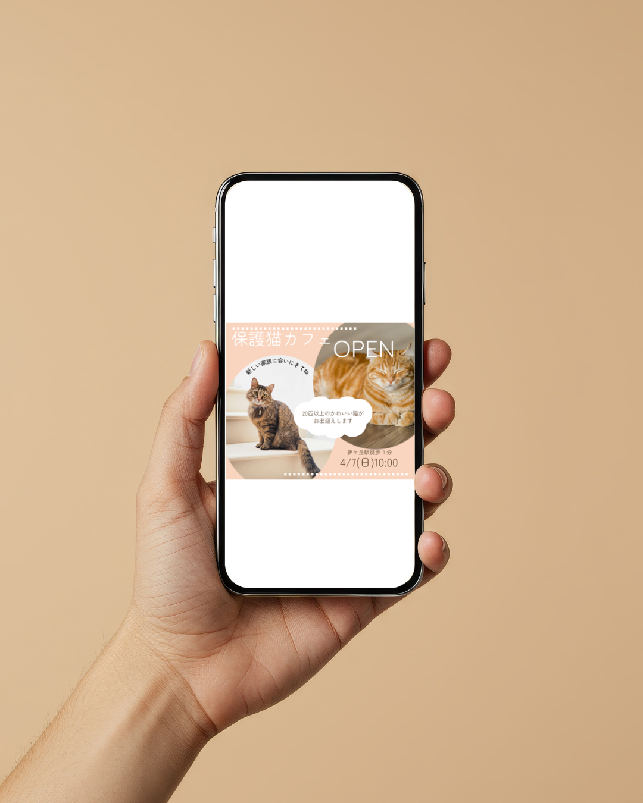

Kana Uchida’s portfolio


猫カフェ バナー

保護猫カフェの新規オープンを告知するバナーを制作しました。
初来店の方にも親しみやすく感じてもらえるよう、
柔らかい配色と丸みのあるレイアウトで全体を構成しています。
猫の写真を主役にすることで視線を自然に誘導し、
「新しい出会い」を感じられるデザインを意識しました。
学校のパソコンではデフォルトのフォントしか使用できない為、
文字入れのみCanvaを使用しました。
| バナー設置場所 | 地域の情報サイト |
|---|---|
| ターゲット | 30代女性 |
| イメージ | ベージュをベースに温かみのあるナチュラルな雰囲気 |
| バナーサイズ | 336×280 |
| テキスト | 保護猫カフェオープン 4月7日（日）10:00←英語表記でもOK 夢丘駅徒歩1分 20匹以上のかわいい猫がお出迎えします 新しい家族に会いにきてね |
| 画像 | 室内にいる猫の写真 |
| 制作時間 | ３時間 |
| 使用ツール |